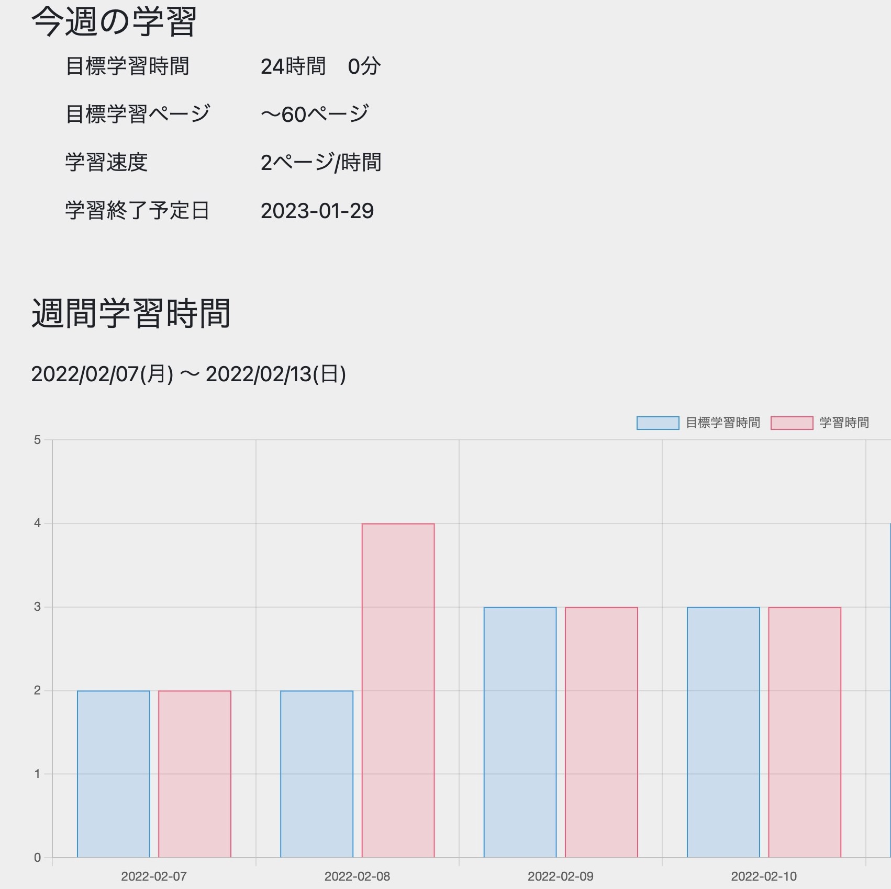
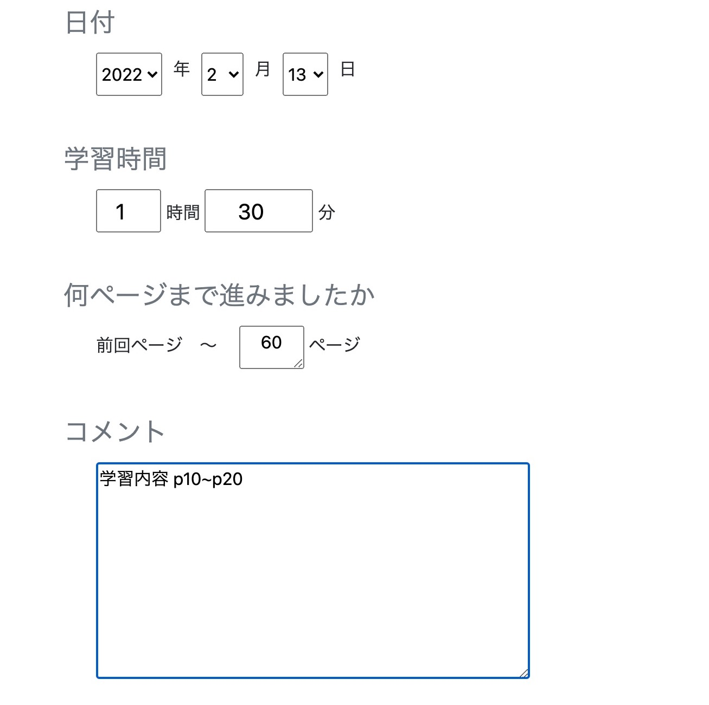

Learning（学習記録アプリ）
開発環境
Ruby / Ruby on Rails / MySQL / GitHub / Heroku / Visual Studio Code
-
概要
制作時間 150時間 URL https://learning37327.herokuapp.com/ ID Mkimura PASS mk1234 -
動作テスト
テスト用アカウント
mail testuser@email.com PASS a123456
OUTLINEアプリケーションの概要
オリジナルアプリケーションとして、目標を自動作成する学習記録アプリを開発しました。
主な機能は、ユーザー管理機能、教材登録機能、学習記録登録機能、目標登録機能です。
ユーザー登録を行うと、教材を登録できるようになり、教材ごとに学習記録を登録できるようになります。
さらに目標学習時間を設定すると、週の目標学習ページと学習終了予定日が表示されます。
-
開発に至った経緯
新しい学習を始めるにあたって「学習を始めてもなかなか継続できずに挫折してしまう」という課題を感じていました。
自身の経験として、計画を立てる段階で時間をかけて計画を立てるが、全く計画通りに進まず、学習を継続できないことがありました。
この課題を解決するために、計画作りに時間と労力をかけず、また無理のない計画で学習を進めることのできる学習記録アプリがあれば、継続した学習が可能になるのではないかと思い、開発を始めました。
-
開発で工夫したこと
1つ目は学習記録の詳細表示機能です。登録した学習記録を一覧として表示すること以外に、chart-js-railsのgemを導入して棒グラフで学習時間を表示しています。
また、学習のモチベーションを下げないように、今週の学習記録がない場合でも直近の学習記録を棒グラフに表示するようにしています。
2つ目は目標登録機能です。目標学習時間を登録することで棒グラフに表示され、実際の学習時間との比較を一目で行うことができます。また、これまでの学習記録から算出した学習速度と合わせて、週間目標ページと学習終了予定日を計算し、学習計画をサポートします。
-
今後実装したいと思っていること
復習機能、日報機能、カテゴリー機能、目標時間保存機能の導入を考えていますが、その中でもまずは復習機能の実装を考えております。
学習を進める上でどのような頻度で復習をするかは悩む部分です。
記憶曲線に応じて、適切な時期に復習通知をする機能を実装することで、学習計画にかかる時間と労力をさらに減らすことができると考えました。